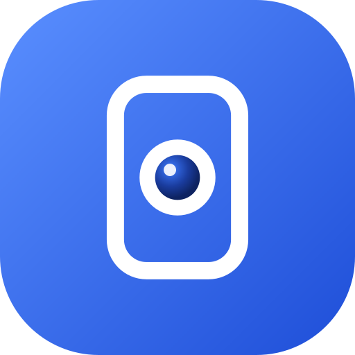

Camerold
Privacy policy
Last updated: October 10, 2026 · App: Camerold (com.vanloctech.camerold)
Camerold turns an Android phone into a live camera that you watch from another phone or a web browser. It is open source: github.com/vanloctech/camerold.
Summary
- The developer does not collect, store, sell or share any of your data. There is no account, no advertising and no analytics.
- Video and sound go directly from the camera phone to the devices watching it, end‑to‑end encrypted.
- Nothing is recorded by the app.
Camera and microphone
On the phone used as a camera, Camerold uses the camera and (if you allow it) the microphone to stream live video and sound, only while you have started streaming. This continues in the background, with a persistent notification, until you stop it. The picture and sound are sent only to devices that know the camera code and password you chose, using WebRTC with DTLS‑SRTP encryption.
On a viewing device, the camera is used only to scan a QR code when you choose to; the image never leaves the device.
Network services the app talks to
- Signaling servers (MQTT brokers): before a stream starts, the devices exchange small messages through public MQTT servers (by default EMQX, HiveMQ, Eclipse Mosquitto and shiftr.io) or a server you configure. These messages are encrypted with a key derived from your camera password, so the servers can't read them. Like any internet service, they can see IP addresses and connection times.
- STUN servers (Google, Cloudflare) help the devices find a direct route; they see IP addresses only.
- Relay (TURN) server: only if you configure one. It forwards encrypted media it can't decrypt.
These services are run by third parties under their own policies. Camerold sends them no personal information beyond what is technically needed to connect.
Data stored on your devices
Settings (camera code, password, names of saved cameras, server details, preferences) are stored only on your devices, in the app's private storage or the browser's local storage. Snapshots you take are saved to your gallery or downloads folder. Uninstalling the app or clearing site data removes the stored settings. If the app crashes, a report is kept on the device and shown to you; it is shared only if you copy it yourself.
Children
Camerold is not directed at children and does not knowingly collect data from anyone.
Changes and contact
Changes to this policy are published on this page. Questions: open an issue at github.com/vanloctech/camerold/issues.
Chính sách quyền riêng tư
Cập nhật: 10/10/2026 · Ứng dụng: Camerold (com.vanloctech.camerold)
Camerold biến điện thoại Android thành camera xem trực tiếp từ điện thoại khác hoặc trình duyệt. Mã nguồn mở: github.com/vanloctech/camerold.
Tóm tắt
- Nhà phát triển không thu thập, lưu trữ, bán hay chia sẻ bất kỳ dữ liệu nào của bạn. Không có tài khoản, không quảng cáo, không thống kê sử dụng.
- Hình và tiếng đi thẳng từ máy camera tới các máy đang xem, được mã hoá đầu‑cuối.
- Ứng dụng không ghi hình.
Camera và micro
Trên máy dùng làm camera, Camerold dùng camera và (nếu bạn cho phép) micro để phát hình và tiếng trực tiếp, chỉ khi bạn đã bấm bắt đầu phát. Việc phát tiếp tục khi chạy nền, kèm thông báo thường trực, cho đến khi bạn dừng. Hình và tiếng chỉ được gửi tới các máy biết mã camera và mật khẩu do bạn đặt, qua WebRTC mã hoá DTLS‑SRTP.
Trên máy xem, camera chỉ được dùng để quét mã QR khi bạn chọn; hình ảnh không rời khỏi máy.
Các dịch vụ mạng ứng dụng kết nối
- Máy chủ kết nối (MQTT): trước khi phát, hai máy trao đổi vài tin nhắn nhỏ qua các máy chủ MQTT công cộng (mặc định EMQX, HiveMQ, Eclipse Mosquitto, shiftr.io) hoặc máy chủ bạn tự cấu hình. Tin nhắn được mã hoá bằng khoá tạo từ mật khẩu camera nên máy chủ không đọc được. Như mọi dịch vụ Internet, chúng thấy được địa chỉ IP và thời điểm kết nối.
- Máy chủ STUN (Google, Cloudflare) giúp hai máy tìm đường kết nối thẳng; chỉ thấy địa chỉ IP.
- Máy chủ chuyển tiếp (TURN): chỉ khi bạn tự cấu hình; nó chuyển dữ liệu đã mã hoá mà không giải mã được.
Các dịch vụ này do bên thứ ba vận hành theo chính sách riêng của họ. Camerold không gửi cho họ thông tin cá nhân nào ngoài những gì kỹ thuật cần để kết nối.
Dữ liệu lưu trên thiết bị của bạn
Cài đặt (mã camera, mật khẩu, tên các camera đã lưu, thông tin máy chủ, tuỳ chọn) chỉ lưu trên thiết bị của bạn, trong bộ nhớ riêng của ứng dụng hoặc bộ nhớ của trình duyệt. Ảnh bạn chụp được lưu vào thư viện ảnh hoặc thư mục tải về. Gỡ ứng dụng hoặc xoá dữ liệu trang web sẽ xoá các cài đặt này. Khi ứng dụng gặp lỗi, báo cáo lỗi được giữ trên máy và hiện cho bạn xem; chỉ được chia sẻ nếu bạn tự sao chép.
Trẻ em
Camerold không hướng tới trẻ em và không cố ý thu thập dữ liệu của bất kỳ ai.
Thay đổi và liên hệ
Mọi thay đổi chính sách được đăng trên trang này. Câu hỏi: tạo issue tại github.com/vanloctech/camerold/issues.